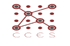

Dr. Ioannis
(John) Karamitsos
Al Furjan,
Masakin Complex, Block A.112
+971(0)
563923684
Dubai, UAE ykar123@gmail.com
RESEARCH
INTERESTS
Cloud Computing, Internet of Things,
Data Center technologies, Optical communications (OTN/SDN), network modeling
and performance analysis, switching and routing algorithms, Supply Chain
Management, Operations Management, Smart grid and Smart Cities under the ICT
and non-ICT convergence.
EDUCATION
|
Executive Certificate 2015 |
Massachusetts Institute of Technology (MIT), Boston,
US “Tackling
the Challenges of Big Data” |
|
Executive Certificate 2014 |
Columbia Business School, New York, US “Driving
Strategic Impact Program” |
|
Ph.D 2013 |
Department of Computing, University
of Sunderland, UK Thesis: Quality of Service (QoS)
Methods for Optical Networks Supervisors: Professor
John Tindle and Dr. Chris Bowerman |
|
Research Methods Certificate 2007 |
Department of
Operations Management, Aston University, UK Research Methods Certificate provides
all the skills that you require to develop a research methodology and is
designed to lead to the development of a research thesis, which is the
conclusion of the RMC. RMC is suitable for starting DBA degree course and it
is designed to enhance executive and professional practice through the
application of sound theory and rigorous research into real and complex
issues in business and management. The modules were: ·
RMC
I: Basic skills within the Management Research process ·
RMC
II: The Philosophy of Management Research ·
RMC
III: Qualitative and Quantitative Research Design and Analysis ·
RMC
IV: Communication and Advanced Research skills Qualifying report: Setting
performance targets in the broadband providers
context using Data Envelopment Analysis Supervisors:
Professor Emmanuel Thanassoulis and Dr. Ozren Despic |
|
MSc 2003 |
Faculty of Applied
Sciences, University of Krems-Danube, Austria Thesis: Emerging Trends in Broadband Networks using VDSL technology Supervisors: Professor Kostas Eustathiou and Jonath Gunther |
|
BSc 1991 |
Faculty of Electronic
Engineering, University of Rome “La Sapienza”, Italy. Thesis: Non-convex Square programming methods for the solution of combined
optimization problems Supervisor: Professor Luigi Grippo |
RESEARCH
EXPERIENCE
|
2010-2011
 |
Research Collaborator
Part-time, CCES Research Group Center
for Complex Engineering Systems (CCES) collocated at MIT and KACST. During
this period, developed and presented research methodologies for the new Saudi
researchers in the CCES group. We have developed models based on Data
Envelopment Analysis (DEA) for measuring the efficiency. Project: Optimization and efficiency for alternative
renewable energy Project: Research on sustainable smart
cities |
|
|
2003-2008 |
Research Assistantship,
Part-time, AIT Athens, Greece Member
of the High Speed Networks and Optical Communications Research Group. Project: Perform research on Optical Burst
Switching (OBS) technology. Comparison with OPS and OCS technologies, and
study the impact of linear impairments in OBS networks. Project: Developed of algorithms, protocols,
architectures and transport schemes for evolving high-speed communication systems
and networks such as CDWM, and DWDM. Project: Research on new optical transport
technologies (OTN, SDN) Head of AIT Optical Group: Prof. Ioannis Tomkos |
|
RESEARCH
EXPERIENCE (INDUSTRIAL)
|
1992-2000
|
Head of Wireline
R&D Department, INTRACOM, Greece During
this period the main activities of R&D department were developed narrowband
and broadband cards and systems. Defines
architectures, establishes vendor relationships, designs boards and FPGAs,
and takes products through regulatory compliance into volume production. EU
and Intracom Company funded the following projects.
Project: Narrowband platform for leased
lines and broadband services. CPE units for the end users. Designed
the system's first board, Quad ISDN BRI. Defined the Motorola 68000 embedded
processor core
and wrote software drivers used on all subsequent board
designs using National/HPC Microcontrollers communication. Consolidated multi-chip ISDN to 3DS0 conversion logic by
designing single Xilinx FPGA
reducing legacy two-board solutions to a
single line card. Project: Designed various xDSL products. Researched
DSL vendors based on density, power, features and technical support. Designed
HDSL and SDSL Line Card and integrated third party firmware for
Central Office and Remote Terminal
applications using HDSL/SHDSL
routers. Project: ATM products. Designed OC-12 ATM Uplink, Quad ATM
DS3 Line Card and Host Processor board. Researched
and selected
PMC-Sierra optical and wired data communication PHYs, Motorola 8240 PowerPC,
Mindspeed SAR, MMC switch fabric, LVDS
backplane links and Intel CPCI bridges. Project: DSLAM platform and ADSL routers/units.
Project: “Network Leased Lines Deployment
using xPON technologies”-OTE project. Project: COST291, “Towards Digital Optical
Networks”. The project is funded by the EU and is focusing on optical
processing for digital network performance, novel network architectures as
well as a unified control plane, network resilience and service
security. |
|
TEACHING
EXPRERIENCE
My
teaching experience is based on tutoring and supervision of postgraduate
students. With the students discusses the research context and the philosophical
base for the research undertaken. In addition, I teach the research framework
and the development of the research questions, the research process, case study
design, selection and data collection methods.
My
goal in teaching will be empower students to become leaders their chosen field.
To that end, I will try to emphasize critical thinking, creativity,
collaboration, and communication skills in addition to the problem-solving
skills that will make them experts in a subject. In the following table my experience as
follows:
|
Fall 2016 |
RIT DUBAI- Mechanic of Programming (CSCI 243) RIT
DUBAI- Designing the User
Experience (ISTE 260) |
|
2016 |
Supervisor- RIT University in Dubai for MSc Student in
Networking Security. |
|
2015 |
Tutor-Private Lessons, Calculus I, II to students for the
preparation for the University of Wollongong in Dubai (UOWD) |
|
2014-2015 |
Preparation and supervising two DBA students from ASTON
University, UK |
|
2015 |
Delivering seminar in “ Research Business Methods” to group
of 10 Postgraduate MBA students, Riyadh KSA. |
|
2009-2015 |
Mentor and advisor of two PhD students in City College of
London, UK. |
|
Winter 2001-Fall 2001 |
Supervised four theses of bachelor students from Technical
University of Athens, in broadband technologies and microcontroller
programming. Testing results are validated in R&D Labs of Intracom Company. |
|
Winter 2000-Fall 2000 |
Supervised on the job thesis for the graduation of 3
Bachelor students coming from Technological Institute of Athens |
|
2001-2003 |
Tutor-Private Lessons, Calculus I, II to students for the preparation
for the University of Athens |
PROFESSIONAL
SKILLS
PROFESSIONAL
CERTIFICATIONS
·
SECURITY
o
CEH v9
certificate (2016)
o
ISO 27002- EXIN
(2016)
·
CLOUD COMPUTING
·
CISCO
o CCNA
Data Center (2014)
·
SERVICE MANAGEMENT
o
ITIL v.3
Foundation Certificate (2011)
·
ISACA
o
COBIT 5
Foundation (2015)
·
IT GOVERNANCE
o
Six Sigma Yellow
Belt (2015)
o
TOGAF 9
Foundation (2013)
o
SCRUM MASTER
(2012)
·
PROJECT MANAGEMENT
o
PRINCE Foundation
(2014)
COMPLETED
COURSES/SEMINARS
PUBLICATIONS:
B. Books:
[B1] Ioannis Karamitsos with title: Broadband Access Network: VDSL Technology.
ISBN: 3659252581, publisher: LAP LAMBERT ACADEMIC PUBLISHING (2012)
[B2] Ioannis Karamitsos with title: Theory of interior points methods for optimization
(2015)- under publication (Italian version).
J.
Publications in refereed journals
[J14] Ioannis Karamitsos and Chris Bowerman, “A Resource Reservation Protocol with
Linear Traffic Prediction for OBS Networks,” In: Advances in Optical Technologies, vol. 2013, Article ID 425372,
6 pages, 2013. doi: 10.1155/2013/425372 (acceptance
rate 26%)
[J13] Karamitsos Ioannis and Al-Arfaj Khalid, "Bandwidth allocation (BA-DBA) algorithm
for xPON networks”, In: International Journal of Computers Applications (IJCA), vol. 50,
no.12, July 2012, ISSN:0975-8887.
[J12] Al-Arfaj Khalid and Karamitsos Ioannis,
“A Bibliography Survey of Maintenance Scheduling Techniques for Power
Generators”, In: Global Journal of Researchers in Engineering, vol
XII, issue (1), March 2012, ISSN:0975-5861
[J11] Karamitsos Ioannis, Al-Arfaj Khalid, and C. Apostolopoulos,
“A fuzzy model for evaluation IP Carriers: A case study of Greek ISP”, In: International Journal of Soft Computing 6
(2): 33-39, 2011, ISSN: 1816-9503, doi: 10.3923/ ijscomp. 2011. 33.39.
[J10] Karamitsos Ioannis, C. Apostolopoulos, and M. Al-Bugami,
“Benefits Management Process Complements other project management
methodologies”, In: Journal of Software
Engineering and Applications, pp.839-844, Vol.3, No.9, 2010, doi:
10.4236/jsea.2010.39097 (downloads: 3200,
views: 9027)
[J9] Mavroidis Athanasios, Karamitsos Ioannis,
and Saletti Paola, “Qualification and provisioning of
xDSL broadband lines using a GIS approach”, In: International Journal of Computer Systems
Science, vol.52, pp.554-557, March 2009
[J8] C. Apostolopoulos, Karamitsos Ioannis
“The Success of IT projects using the Agile Methodology”, In: 1st International Workshop on Requirements
Analysis (IWRA2008), pp.13-20, London, UK, March, December 6th-7th, 2008
[J7] Karamitsos Ioannis and Orfanidis Konstantinos, “An Analysis of Blackouts for
electric power transmission systems”, in
PWASET Transactions of Engineering, Computing and Technology, Vol.12, March
2006, pp.289-292, ISSN 1305-5313
[J6] Karamitsos Ioannis and Orfanidis Konstantinos, “Blackouts in electric power
transmission systems”, In: WSEAS Journal,
Transactions on Systems, Vol.5, Issue 5, pp. 1176-1180, May 2006, ISSN
1109-2777.
[J5] Karamitsos Ioannis “New switching method
for Optical Networks”, In: Hellenic
Association of Greek Engineers and Informatics, Vol.5, pp. 19-23,
November-January 2005.
[J4] Karamitsos Ioannis, and Varthis Evangelos, “A survey of
Reservation schemes for Optical Burst Switching (OBS)”, In: WSEAS Journal, Trans on Circuits and
Systems, Vol.2, Issue 2, pp. 395-400, April 2003, ISBN 1109-2734
[J3] Varthis Evangelos
and Karamitsos Ioannis,
“Saturation Analysis of Burst Acknowledgement Mechanism of IEEE 802.11e MAC
Protocol over Infrared Wireless LANs”. In:
WSEAS Journal, Trans on Communications, Vol.2, Issue 2, pp. 142-147, April –
July 2003, ISBN 1109-2742
[J2] Karamitsos Ioannis and Orfanidis Konstantinos, “Blackouts in electric power
transmission systems” in WSEAS Journal, Transactions
on Systems, Vol.5, Issue 5, pp.1176-1180, May 2006, ISSN 1109-2777.
[J1] Karamitsos Ioannis and Orfanidis Konstantinos, “An Analysis of Blackouts for
electric power transmission systems”, in
PWASET Transactions of Engineering, Computing and Technology, Vol. 12, March
2006, pp. 289-292, ISSN 1305-5313.
R. Refereed Conference Publications
[R16]
Karamitsos Ioannis, George Tsaramiris, and Apostolopoulos Charalampos, "Smart Parking: An IoT
application for Smart City", in the Proceedings of the 10th
INDIACom-2016 International Conference, pp.2271-2275, 16th – 18th
March, 2016, INDIA
[R15]
Karamitsos Ioannis, and Apostolopoulos Christos, “Study of flow streams as a performance parameter for Data
Centers". In The International Conference on Innovations
in Information Technology 2015 (IIT’15), pp.269-272, 1st- 3th Nov, 2015, Dubai, UAE
(Best Application Oriented Paper Award)
[R14] Karamitsos Ioannis, and Margaret-Mary
Nelson "The impact of organisational models for
non-core business services in the FM". In
8th International Facility Management Congress, pp: 17-34, 19th -20th
Nov 2015, Vienna, Austria.
[R13] Karamitsos Ioannis, and Khalid Al-Arfaj “Optimizing AHP incomplete comparisons using
D-optimal design" In 23rd
International Conference on Multiple Criteria Decision Making (MCDM 2015),
pp.62, 2nd- 7th August 2015, Hamburg, Germany.
[R12] Karamitsos Ioannis, Fahad Ali Alsaighi and Apostolopoulos
Christos, “Future and Trends in Optical Transport Networks", In Proceeding 22nd IEEE TELFOR
2014, pp.593-596, 25th-17th 2014, Belgrade, Serbia.
[R11] Karamitsos Ioannis, Khalid Al-Arfaj and Apostolopoulos Charalampos, “D-optimal designs approach for AHP Incomplete
comparisons" In Proceeding 7th
International Conference on Software, Knowledge, Information Management and
applications, (SKIMA 2013), 18-20 December 2013, Chiang Mai, Thailand.
[R10] Karamitsos Ioannis and Apostolopoulos Charalambos, “Convergence:
Smart Home into Cloud”, In 10th
IEEE International Conference Wireless and optical communications networks
(WOCN 2013), 26-28 July 2013, Bhopal, India, ISSN: 2151-7681, PRINT ISBN: 978-1-4673-59997-9,
DOI: 2013.6616254
[R9] Apostolopoulos. C, Karamitsos I, and Apostolopoulos
H., “Measuring the Operational Efficiency using Data Envelopment Analysis of a
Greek Internet Service Provider”. In 1st
Balkan Conference in Operation Research (BALCOR 2011), Thessaloniki, Greece,
21st -23rd September, 2011
[R8] Karamitsos Ioannis, A. Mavroidis “Study of TCP over OBS with Physical
Impairments”. In Proc. 5th IEEE-GCC
Conference, Kuwait, 15th-17th March 2009
[R7] Karamitsos Ioannis, Katerina Vagelatou, and Gianna Koliopanou,
“Group Tone Spectrum Management Algorithm (GTSM) for VDSL2 technology”, in Proc. 3rd International Conference on
Systems and Networks Communications (ICSNC’08), pp. 98-102, Silema,
Malta, October 26-31, 2008
[R6] Karamitsos Ioannis and Alexandros Prosmitis,“
Very High Bit Rate Digital Subscriber Line (VDSL2) technology for triple play
services”, in Proc. Conference on
Communications, Computer, and Power (ICPPP’07), Muscat, Oman, February 19-21,
2007
[R5] Karamitsos Ioannis and Orfanidis Konstantinos, “An analytical approach for Dynamic
Voltage Stability Analysis in Power Systems”, in Proc. 5th WSEAS International Conference on Applications of
Electrical Engineering (AEE’06), Prague, Czech Republic, March 12-14,2006.
[R4] Karamitsos Ioannis, Tzanakaki
Anna, and Tomkos Ioannis, “Study
of Physical Effects as a Performance parameter in a Optical Burst Switched Networks”, in Proc. ICTON 2005, MoA1, TU B.1.6,
pp.228-231, Barcelona, Spain, 3-7 July, 2005
[R3] Karamitsos Ioannis, “Analytical model
for Optical Burst Switching (OBS) networks with Linear Impairments”, in Proc. 2nd IEEE-IFIP International
Conference on Wireless & Optical Communications networks (WOCN 2005), pp.
192-195, Dubai, UAE, March 6-8, 2005
[R2] Karamitsos Ioannis, and Varthis Evangelos, “Impact of
Linear Transmission Impairments on Optical Burst Switching (OBS) Networks”, in Proc. 1st IEEE-IFIP International
Conference on Wireless & Optical Communications networks (WOCN 2004),
Muscat, Oman, June 7-9, 2004
[R1] Karamitsos Ioannis, and Varthis Evangelos, “Routing
mechanisms for IP over OBS-WDM optical networks”, in Proc. 12th IEEE Mediterranean Electro-technical
Conference (MELECON 2004), vol. II, pp.523-527, Dubrovnik, Croatia, May 12-15,
2004.
INVITED
PRESENTATIONS-TALKS
|
2016 |
RIT University of Dubai, Seminar: “IoT
into the Smart Cities” |
|
2015 |
University of
Wien, Austria Talk: “The impact of
organisational models for non-core business services in the FM" |
|
2015 |
Conference of
Innovation IIT’15 –UAE University, Dubai (Best Application Paper Award) Talk: “Study of flow streams as
a performance parameter for Data Centers" |
|
2013 |
Boussias Conference, Athens Greece Talk: “Smart Cities in Saudi
Arabia” |
|
2006 |
University of the Aegean,
October 2006 Presentation Title: “TCP/IP over OBS with Physical Impairments” |
|
2004 |
University of the Aegean,
November 2004 Presentation Title: “Physical Impairments on Optical Burst Switched
Networks” |
|
2003 |
University of the Aegean,
October 2003 Presentation Title: “Optical Burst Switching” |
ACADEMIC
COMMUNITY INVOLMENT
Journals: Editorial Board Member
Editorial Board Member
·
International Journal of Computer Network &
Communications (IJCNC)
·
International Journal of Multimedia & its Applications
(IJMA)
Conferences and Workshops: Program
Committee and Reviewer Member
Program Committee Member
·
The First International Conference on Networks &
Communications (NetCoM-2009) 27-29 December 2009, Chennai, India
·
The First International Workshop on Computer Networks &
Communications (CoNeCo-2009), April 1-3, Dong Hoi City, Vietnam
·
The First International Workshop on Wireless & Mobile
Networks (WiMon-2009), March 23-25, 2009 Athens, Greece
·
The First International workshop on Grid Computing (GridCom- 2009), May 10-13, 2009, Rabat, Morocco
·
The First International Workshop on Wireless & Mobile
Networks (WiMo-2009), July 7-10, 2009 Brisbane, Australia
Technical Program Committee Member
·
The 4th International Conference on Systems and Network
Communications (ICSNC 2009) – Porto, Portugal
Reviewer Member
·
Open Journal of Mobile Computing and Cloud Computing
·
1st Asian Conference on Intelligent Information and Database
Systems (ACIIDS 2009)
CONSULTING EXPERIENCE
iTokk Communications,
Vancouver, Canada, Jun
2008-Aug 2010
Role:
VP of R&D Mobile VoIP
Georing Services,
Darmstand Germany and Athens, Greece, May 2009-Jan 2010
Role:
Procurement Satellite Expert Consultant
Ministry
of Development, Information Society, Athens, Greece, 2008
Role:
Principal Evaluator Consultant
Ministry
of Development, Information Society, Athens, Greece, 2005
Role:
Principal Evaluator Consultant
PROFESSIONAL EXPERIENCE
Orange Business Services (OBS), Dubai, UAE Oct. 2010 to Present
Orange Business Services is
part of the France Telecom group. OBS offers a range of managed services including
WAN and LAN services, security, mobility, video and consulting services in over
220 countries and territories.
-Managing Consultant for Smart Cities
-Member of DSOA Innovation Advisory Board
Hold multifaceted responsibility within senior management
role, tasked with providing critical direction and strategic leadership to full
construction of two Smart Cities (ITCC and KAFD) in Riyadh. Actively manage
numerous concurrent contracts with the Saudi Telecom Company (STC) while
maintaining ongoing effort to obtain new engagements. Leverage expertise in
project management, communications, negotiations, business development and team
leadership. Active Member of Smart City Initiative and Member of City Protocol
in Dubai.
·
Engagement
providing consulting and strategy in Digital Silicon Oasis for Smart city
innovation.
·
Participated
as solution architect for the Tecom RFP in Smart City
open data, and DU for big data integration.
·
Define
M2M and IoT strategies for the integration into smart
city services.
·
Responsible
for the preparation of standardization for Smart Cities and the indexes how to
qualify a Smart City.
·
Managing
large and complex Real Estate projects for Smart Cities (ITCC and KAFD) in Riyadh
with a total budget amount of $15B.
·
Close
liaison with the client Real Estate Company - Rayadah
Investment Company (RIC), so as to understand complex business requirements,
identify opportunities and develop strategic alliances.
·
Innovation
in the form of Smart City Solutions delivering technologies, products and
services that meet the dual challenge of reducing greenhouse gas emissions and
delivering more efficient services.
·
Defined
Strategy Roadmap for Smart City Vision and Innovation for ITCC and KAFD.
·
Defined
the business and operational model; participated in the negotiations for the
definition of revenue share model between the client and the telecom
incubator.
·
Responsible
for defining Facility Management Strategy in ITCC and KAFD smart cities.
·
Responsible
for the preparation of RFPs and vendor evaluation.
·
Presales
support for new projects- SABIC telepresence project.
·
Responsible
for the delivery on time and within budget the network infrastructure (FTTx and GPON) with CISCO equipment; Service platforms
(Voice, Data, and IPTV/VoD); UCC solutions
(telepresence, videoconferecing); OSS tools
(provisioning, management, monitoring, reporting); and Services Creation.
·
Supervised
and approved the technical design and build phase to subsequent implementation
for the two smart cities projects KAFD and ITCC in Riyadh.
·
Supervised
and approved ELV integration systems and applications (smart metering, ELV
systems).
·
Directed
and approved IT Data Center solution and the migration to Cloud Computing and
Big Data.
On Telecoms, Inc Athens
Greece
CTO May 2008-Oct 2010
Chief Technical Officer and member of the senior
management team. In charge of the overall network implementation including
end-to-end Broadband platform designed for delivery triple-play services over
IP network.
Major tasks:
· Supervised and
coordinated project management activities for the launch of the triple play
services within the Greek market.
· Defined of triple play
investments and budgeting.
· Prepared and presented
to the BoD the network planning for the rest of
Greece.
Network Operations Manager Feb 2007- May 2008
Responsible of Network Infrastructure from the very
beginning of the start-up phase.
Major roles:
Major projects:
Huawei Technologies, Plc Athens
Greece
Business
Development Director May 2006-Feb 2007
Business Development Director and
member of the senior management team. In charge of the overall Greek and Balkan
markets for developed Broadband and Metro Carrier Ethernet networks.
Major tasks:
Major projects:
Senior Technical
Manager Jan 2005-Apr 2006
Intracom Holdings Athens
Greece
Senior Product
Manager Jun 2000-Dec 2004
Major tasks:
Major projects:
R&D Electronic Engineer Jan 1992-May 2000
Major tasks:
Major projects:
SELECTED
HONOURS AND AWARDS
MEMBERSHIPS
PERSONAL
INFORMATION
|
·
Citizenship:
Greek ·
Resident:
Dubai, UAE ·
Date
of Birth: 18th June 1962 |
|
REFERENCES:
Upon request